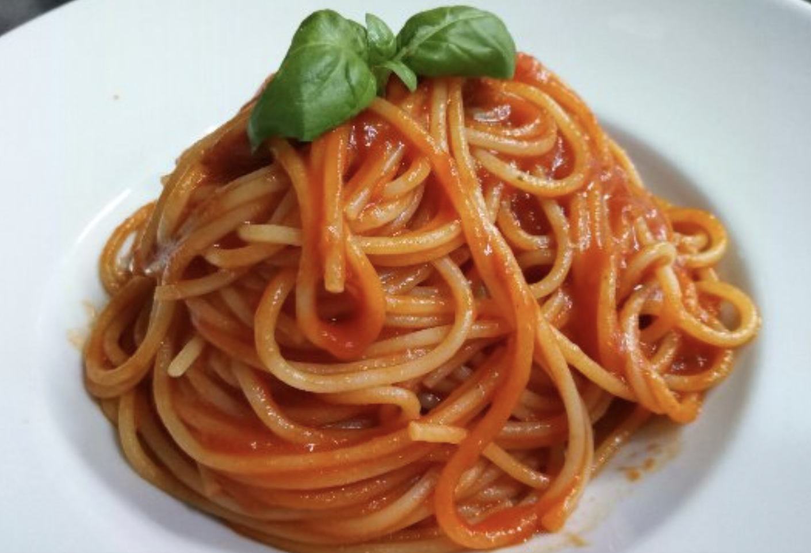

Penne al Pomodoro
Ingredienti
Di seguito elenchiamo gli ingredienti per comporre il nostro piatto
- 300g di Spaghetti
- 1l di passata di pomodoro
- 2/3 foglie di basilico
- 50g di cipolla
Preparazione
- Versare la passata di pomodoro in padella
- Aggiungere la cipolla e far rosolare il tutto
- Aggiungere il basilico
- Scolare la pasta e saltarla in padella con il soffritto
- Servire il piatto